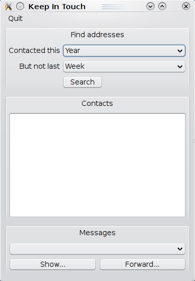

|
Home · All Classes · All Functions · | |
Files:
This example demonstrates using the Qt Mobility Messaging API to extract useful information from the messages stored by the system.

The 'Keep in Touch' application locates people you have sent messages to in the past, but with whom you have not communicated recently. It defines a user-selected date range in the past, beginning a certain amount of time ago and finishing more recently. Any address that you sent a message to in this period is located. Any address that you sent a message to more recently than this period will not be displayed. So, now might be a good time to say hello to the people whose addresses are reported!
We find addresses when the user clicks the Search button. First of all we find the dates that define the period that the user has selected.
QDateTime now(QDateTime::currentDateTime());
bool useExclusionPeriod(excludeCheckBox->isChecked());
// Determine the dates that demarcate the selected range
QDateTime minimumDate(now);
switch (includePeriod->currentIndex()) {
case 0: minimumDate = minimumDate.addMonths(-12); break;
case 1: minimumDate = minimumDate.addMonths(-9); break;
case 2: minimumDate = minimumDate.addMonths(-6); break;
case 3: minimumDate = minimumDate.addMonths(-3); break;
case 4: minimumDate = minimumDate.addMonths(-1); break;
case 5: minimumDate = minimumDate.addDays(-7); break;
default: break;
}
QDateTime maximumDate(now);
if (useExclusionPeriod) {
// We have an exclusion period to apply
switch (excludePeriod->currentIndex()) {
case 0: maximumDate = maximumDate.addDays(-7); break;
case 1: maximumDate = maximumDate.addMonths(-1); break;
case 2: maximumDate = maximumDate.addMonths(-3); break;
case 3: maximumDate = maximumDate.addMonths(-6); break;
case 4: maximumDate = maximumDate.addMonths(-9); break;
default: break;
}
}
We create filter objects that will constrain our message search to the date range that the user has selected:
// We will include addresses contacted following the minimum date QMessageFilter includeFilter(QMessageFilter::byTimeStamp(minimumDate, QMessageDataComparator::GreaterThanEqual)); // Windows mobile only sets a receptionTimeStamp for sent messsages includeFilter |= QMessageFilter::byReceptionTimeStamp(minimumDate, QMessageDataComparator::GreaterThanEqual); QMessageFilter excludeFilter; if (useExclusionPeriod) { // We will exclude addresses contacted following the maximum date excludeFilter = QMessageFilter::byTimeStamp(maximumDate, QMessageDataComparator::GreaterThanEqual); excludeFilter |= QMessageFilter::byReceptionTimeStamp(maximumDate, QMessageDataComparator::GreaterThanEqual); }
Now we combine our filters to precisely specify the messages that we would like to inspect to perform our address search:
// We only want to match messages that we sent QMessageFilter sentFilter(QMessageFilter::byStandardFolder(QMessage::SentFolder)); // Create the filter needed to locate messages to search for addresses to include if (useExclusionPeriod) { inclusionFilter = (sentFilter & includeFilter & ~excludeFilter); } else { inclusionFilter = (sentFilter & includeFilter); }
Now that we know what messages to search for, we use an instance of QMessageService to perform our first search:
if (useExclusionPeriod) {
// Create the filter needed to locate messages whose address we will exclude
QMessageFilter exclusionFilter;
exclusionFilter = (sentFilter & excludeFilter);
// Start the search for messages containing addresses to exclude
service.queryMessages(exclusionFilter);
} else {
// Only search for messages containing addresses to include
service.queryMessages(inclusionFilter);
// Clear the inclusion filter to indicate that we have searched for it
inclusionFilter = QMessageFilter();
}
We could have queried the QMessageManager instance directly using the queryMessages function, but that would keep our UI thread busy, and we wouldn't be able to keep our UI functioning at the same time. Using the QMessageService interface allows us to process the search asynchronously.
We receive the notification of matching messages by responding to the QMessageService::messagesFound() signal:
void AddressFinder::messagesFound(const QMessageIdList &ids)
{
// Add these IDs to the relevant set
if (!inclusionFilter.isEmpty()) {
exclusionMessages << ids;
} else {
inclusionMessages << ids;
}
}
When the search is completed, the QMessageService::stateChanged() signal is emitted. If the user specified an exclusion period then we have to perform two searches, so when the first finishes our handler initiates the second; when the second finishes, we begin processing the results:
void AddressFinder::stateChanged(QMessageService::State newState)
{
if (newState == QMessageService::FinishedState) {
if (service.error() == QMessageManager::NoError) {
if (!inclusionFilter.isEmpty()) {
// Now find the included messages
service.queryMessages(inclusionFilter);
// Clear the inclusion filter to indicate that we have searched for it
inclusionFilter = QMessageFilter();
} else {
// We have found the exclusion and inclusion message sets
if (!inclusionMessages.isEmpty()) {
// Begin processing the message sets
QTimer::singleShot(0, this, SLOT(continueSearch()));
The continueSearch function processes the results of our searches, one message at a time. Each address we sent a message to in the excluded time period is added to our exclusion list. For each address we sent a message to in our included time period, and which is not in the exclusion list, we create a set of the messages that we sent to that address.
void AddressFinder::continueSearch()
{
if (!exclusionMessages.isEmpty()) {
// Take the first message whose addreses we should exclude
QMessageId id(exclusionMessages.takeFirst());
const QMessage message(id);
// All recipient addresses are to be excluded
foreach (const QMessageAddress &address, message.to() + message.cc() + message.bcc()) {
excludedAddresses.insert(simpleAddress(address));
}
} else if (!inclusionMessages.isEmpty()) {
// Take the first message to inspect for suitable addresses
QMessageId id(inclusionMessages.takeFirst());
const QMessage message(id);
QString details;
// For each recipient of this message
foreach (const QMessageAddress &address, message.to() + message.cc() + message.bcc()) {
QString addressOnly(simpleAddress(address));
// Ignore recipients whose addresses we have added to the exclusion set
if (!excludedAddresses.contains(addressOnly)) {
// Link this message to this address
QList<QPair<QString, QMessageId> > &messageList(addressMessages[addressOnly]);
if (messageList.isEmpty()) {
addressList.append(addressOnly);
// Add the recipient to our visible list of contacts to keep in touch with
contactList->addItem(contactDisplayName(address));
}
if (details.isEmpty()) {
// Determine the properties of the message
details = QString("[%1] %2").arg(message.date().toString("MMM d")).arg(message.subject());
}
messageList.append(qMakePair(details, id));
}
}
}
if (!exclusionMessages.isEmpty() || !inclusionMessages.isEmpty()) {
// There are more messages to process
QTimer::singleShot(0, this, SLOT(continueSearch()));
} else {
// We're finished our search
setSearchActionEnabled(true);
#ifndef USE_SEARCH_BUTTON
tabChanged(1);
#endif
if (
#ifdef USE_CONTACTS_COMBOBOX
contactList->currentIndex() != -1
#else
contactList->currentItem()
#endif
) {
// Select the first address automatically
addressSelected(
#ifdef USE_CONTACTS_COMBOBOX
contactList->currentText()
#else
contactList->currentItem()->text()
#endif
);
}
}
}
We will display the resulting list of contacts in our Contacts pane. If the system contains a contact definition that matches the address information we extracted, we will display the label for that contact - this matching process can be accomplished using the Qt Mobility Contacts API. If we can't find a matching contact, we fall back to using the raw address information for display:
QString contactDisplayName(const QMessageAddress &address)
{
QString addressOnly(simpleAddress(address));
// See if we can match this address to a contact
QContactDetailFilter filter;
if (address.type() == QMessageAddress::Email) {
// Match contacts on email address data
filter.setDetailDefinitionName(QContactEmailAddress::DefinitionName);
filter.setValue(addressOnly);
filter.setMatchFlags(QContactFilter::MatchContains);
} else if (address.type() == QMessageAddress::Phone) {
// Match contacts on phone number data
filter.setDetailDefinitionName(QContactPhoneNumber::DefinitionName);
filter.setValue(addressOnly);
filter.setMatchFlags(QContactFilter::MatchPhoneNumber);
}
QContactManager manager;
foreach (const QContactLocalId &contactId, manager.contactIds(filter)) {
// Any match is acceptable
const QContact &contact(manager.contact(contactId));
return contact.displayLabel();
}
// We couldn't match anything, so return the original address
return address.addressee();
}
If the user selects one of these contact addresses, we fill the Messages combo box with the list of messages that were previously sent to that contact:
void AddressFinder::addressSelected(const QString &address)
{
messageCombo->clear();
QString addressOnly(simpleAddress(address));
// Add the subject of each message to this address to the message pane
typedef QPair<QString, QMessageId> MessageDetails;
foreach (const MessageDetails &message, addressMessages[addressOnly]) {
messageCombo->addItem(message.first);
}
}
When the user has selected a message, two further actions become possible. We can use the QMessageService facility to either view the message or to compose a new message to the recipient of the earlier message. To view the message we only need to invoke the show function for the relevant QMessageId:
void AddressFinder::showMessage()
{
int index = messageCombo->currentIndex();
if (index != -1) {
// Find the address currently selected
const QString &selectedAddress(addressList[
#ifdef USE_CONTACTS_COMBOBOX
contactList->currentIndex()
#else
contactList->currentRow()
#endif
]);
// Show the message selected
QMessageId &messageId((addressMessages[selectedAddress])[index].second);
service.show(messageId);
}
}
To compose a response, we will create a new message that forwards the existing message content to the same recipient, and requests that the system display a message composer prepared with the message content we have prepared:
void AddressFinder::forwardMessage()
{
int index = messageCombo->currentIndex();
if (index != -1) {
// Find the address currently selected
const QString &selectedAddress(addressList[
#ifdef USE_CONTACTS_COMBOBOX
contactList->currentIndex()
#else
contactList->currentRow()
#endif
]);
// Find the selected message
QMessageId &messageId((addressMessages[selectedAddress])[index].second);
QMessage original(messageId);
// Create a message which forwards the selected message to the same recipient
QMessage fwd(original.createResponseMessage(QMessage::Forward));
fwd.setTo(original.to());
service.compose(fwd);
}
}
| Copyright © 2010 Nokia Corporation and/or its subsidiary(-ies) | Trademarks | Qt Mobility Project 1.0.2 |